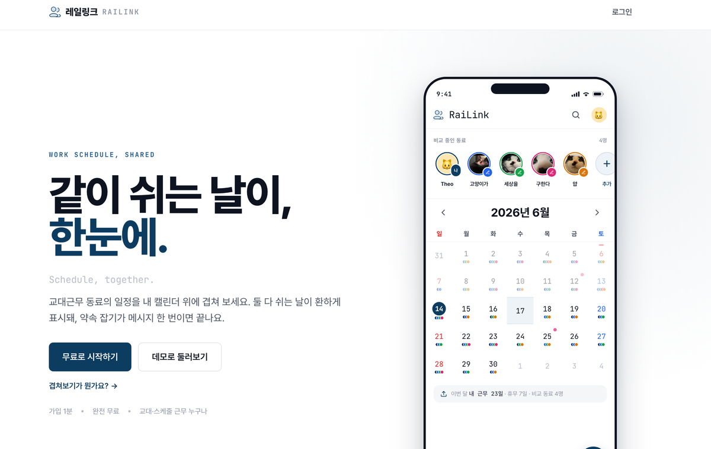
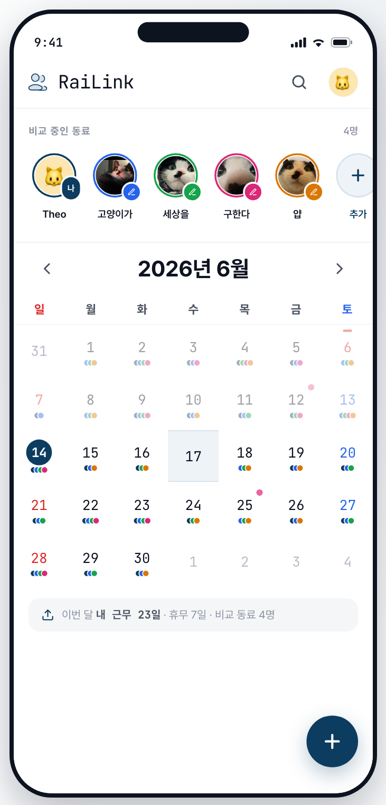

Case 01
직접 만든 것
1인 빌드·운영
근무표가 제각각인 사람끼리,
같이 쉬는 날을 어떻게 찾지?

44
광고 한 푼 없이 가입한 사람. 초대받으면 셋 중 둘이 가입했다.
Problem
교대 근무자는 근무표가 매달 새로 짜여서, 친구와 쉬는 날을 맞추기가 쉽지 않습니다. 저도 항공 승무원 시절 그랬고, KTX 승무원 지인도 마찬가지였어요. 항공이든 철도든, 교대로 일하는 사람이라면 누구나 겪는 일이죠.
다들 '일정이 안 맞아서'라고 생각하지만, 겹치는 날은 분명히 있었어요. 문제는 그걸 알려면 서로 근무표를 캡처해 한 장씩 눈으로 맞춰봐야 한다는 것. 그 품이 너무 컸습니다.
매달 반복되는 그 수고를 없애면, 안 맞는 줄 알았던 일정에서도 같이 쉴 날이 나온다고 봤어요. 그래서 직접 만들기 시작했습니다.
What I built
질문을 바꿨습니다. 사람마다 색을 정해 모두의 근무·휴무를 한 캘린더에 겹쳐 두면, 비는 날은 굳이 찾지 않아도 저절로 드러납니다.
서로 동의한 사람끼리만 일정이 보이게 했고, 처음 온 사람도 빈 화면을 안 만나도록 데모 계정을 채워 뒀어요. 기획부터 UX·디자인·프론트엔드까지 혼자, 설치 없이 쓰도록 PWA로 배포했습니다.
2026년, 지인 한 명으로 실사용을 시작했습니다.

PWA
설치 없이 · 1인 운영
Diagnosis
첫 달 GA에는 '활성 사용자 489명'이 찍혔지만, 그중 100명 가까이는 해외에서 들어온 봇이었어요. 걷어내니 국내 실방문은 약 400명.
그런데 이 대부분도 '사용자'가 아니라 구경만 하고 떠난 방문자였고, 실제 가입은 44명. 들어온 열에 아홉이 가입 없이 떠난 셈이라, 여기가 가장 크게 새는 구간이었습니다.
가입 이후의 행동은 GA가 아니라 서비스 DB에 있어서, SQL로 깔때기를 직접 짚고 본인 운영 계정은 다 뺐습니다.
'활성 사용자'는 일부러 더 깐깐하게 셌어요.
처음엔 공유를 수락한 32명으로 잡았는데, 수락해도 한쪽이 근무표를 안 올리면 겹쳐볼 게 없잖아요. 그래서 '연결까지 됐고 양쪽 다 근무표가 있는 23명'으로 좁혔습니다. 보기 좋은 숫자 대신, 실제로 가치를 본 사람만 세고 싶었으니까요.
GA의 '활성 사용자 489'가 아니라, 봇을 걷고 DB로 좁힌 실사용자 23. 어느 숫자를 세느냐가 다음 실험의 방향을 바꿨다.
By the numbers
보기 좋은 숫자 대신, 실제로 가치를 본 사람만.